Lien vers "Tester ses connaissances" du manuel Delagrave : lien
Une donnée est une valeur ou un ensemble de valeurs pouvant prendre plusieurs formes (nombre, chaîne de caractères …)
et permettant de décrire un ou plusieurs objets.
Exemple : pour un élève de votre classe, l’âge est une donnée, le prénom, la photo …
Afin de permettre leur utilisation, il est nécessaire de :
Vidéo Delagrave P14-15 : histoire des données structurées
Le Big Data est l’ensemble des données numériques produites par l’utilisation des nouvelles technologies ou l’échange d’informations.
Quelques faits impressionnants sur le Big Data – source lebigdata.fr :

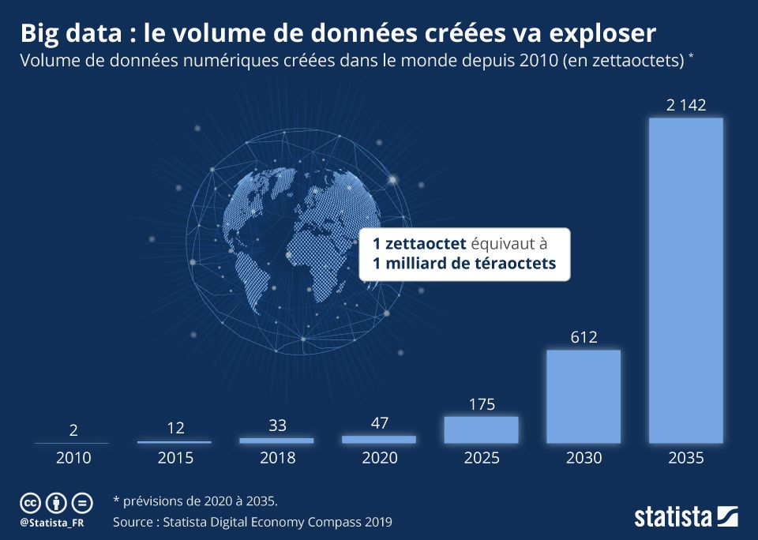

En quoi le Big Data améliore-t-il nos vies quotidiennes ? Source : vouchercould.fr
Le Big Data répond à 3 principes, résumés par les « trois V » de l’analyste Doug Laney :
On y ajoute maintenant :
Le format des données correspond à la manière dont celles-ci sont codées.
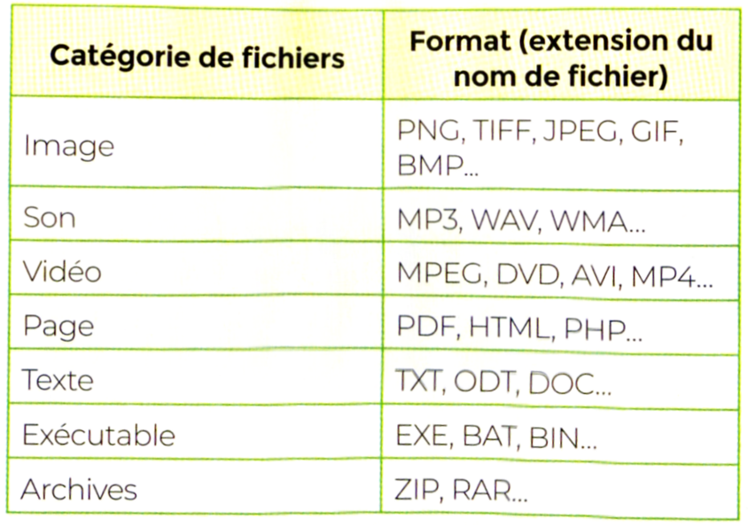
Les Open Data, ou données ouvertes, sont des données auxquelles l’accès est totalement public et libre de droit, de même que leur exploitation ou leur réutilisation.
Exemple d’Open Data : data.gouv.fr
Les métadonnées d’un fichier sont un ensemble de données décrivant les caractéristiques d’un fichier, sans être spécifiquement liées à son contenu.
Ce sont donc les informations qui décrivent un fichier.
Par exemple : nom, date de création, format, créateur …
Exemple :
Pour stocker les caractères, on associe un code binaire à chaque caractère.
Historiquement, une des premières méthodes de codage des caractères est appelée ASCII (American Standard Code for Information Interchange )
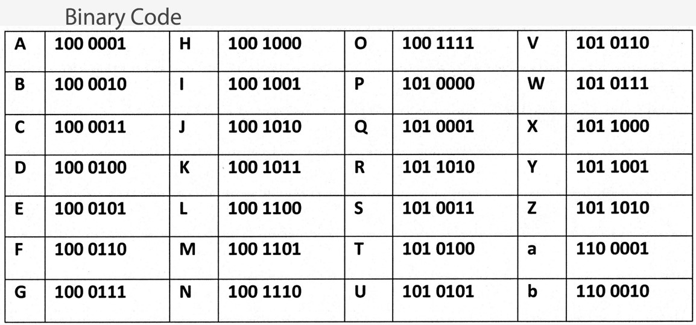
Les données structurées sont des données regroupées et stockées sous la forme d’une table regroupant de multiples objets selon un ou plusieurs descripteurs.
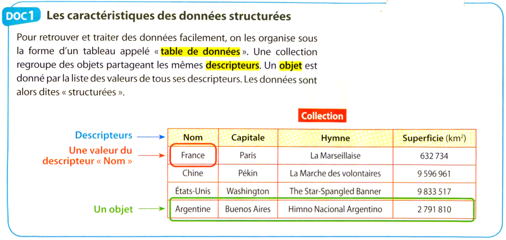
Vidéo INRIA : Données, comment les manipuler ?
Une base de données est une entité stockant des données structurées et permettant leur traitement à l’aide d’algorithmes.
Vidéo Delagrave P18 : l'histoire des bases de données
Les formats des bases de données :
Exemples de formats : tableur (Excel, Libreoffice calc ...) ; CSV ; JSON
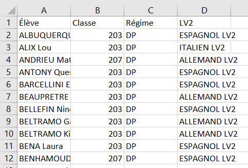
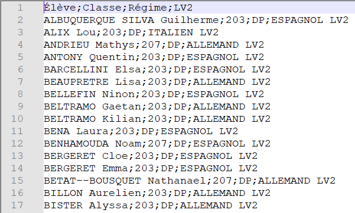
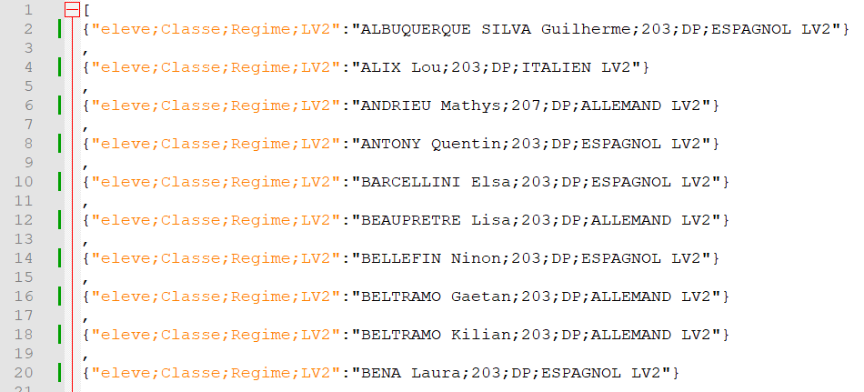
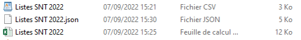
A l’aide d’un tableur, on peut faire des opérations sur les données : les trier, les filtrer …
TP 2SA3 sur les tableurs
Avec Python on peut traiter des données au format csv ou au format JSON.
Activité du manuel Le Livre Scolaire
Requête SQL : une requête permet d’extraire des informations d’une base de données
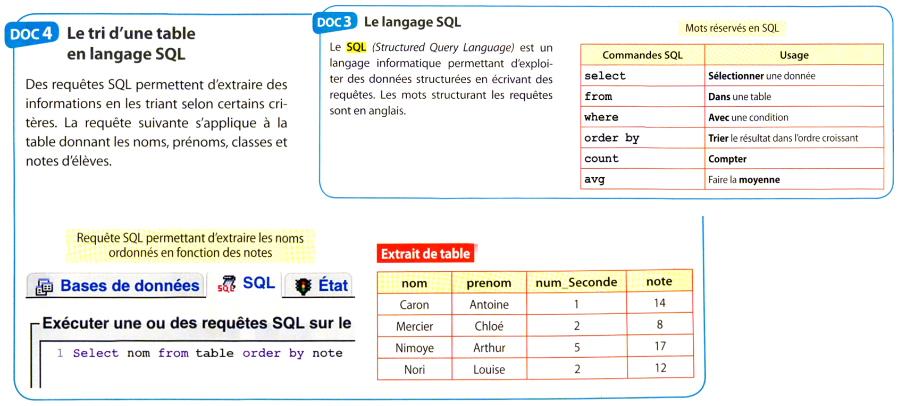
Une donnée personnelle est toute information se rapportant à une personne physique identifiée ou identifiable. Une personne physique peut être identifiée :
L’identification d’une personne physique peut être réalisée :
La collecte légale : Extrait de l’article « Nos données personnelles : un marché convoité » - CS Science – Mai 2021 :
« Mais que contiennent ces fameuses données personnelles ? À peu près tout ! De notre géolocalisation aux coordonnées bancaires,
en passant par les pages web consultées, nos achats en ligne, nos « likes » sur les réseaux sociaux, les vidéos regardées et tutti quanti.
Il y a aussi les « moments de vie » – naissance, mariage, déménagement, etc. – lesquels génèrent des besoins dans notre vie de consommateur et
donnent une grande valeur à nos données dans une optique de marketing et de fidélisation. »
La collecte illégale : le hacking
Vidéos Hack Academy
Tous les états membres de l’UE sont dotés d’une loi informatique et libertés et d’une autorité nationale de protection des données.
Les données sont protégées par :
En France, l’autorité compétente est la CNIL (Commission Nationale de l’Informatique et des Libertés), créée en 1978.
Vidéo Le Monde sur le RGPD
Infographie Le Monde :
Extraits de l’article « Données personnelles : un marché dominé par l’opacité » – La Croix – juin 2022
« Difficile à estimer, la valeur du marché des données dans l’Union Européenne pourrait atteindre 105 milliards d’euros d’ici à 2025,
selon le cabinet IDC et le laboratoire d’idées The Lisbon Council. Ce marché était estimé à plus de 9 milliards d’euros en France en 2019. »
« En 2020, les revenus tirés de la publicité représentaient 98 % des revenus de Facebook et 81 % de ceux de Google, soit un peu plus de 231
milliards de dollars pour les deux entreprises, selon la World Federation of Advertisers. »
Vidéo France Inter sur le marché des données personnelles :
Vidéo Lunmi : protéger nos données personnelles :
Vidéo Date Gueule :
On peut stocker des données localement (clef USB, disque dur, CD …) ou en externe sur un Cloud.
Le cloud computing consiste à utiliser un serveur externe pour stocker des données, ou encore utiliser la puissance de celui-ci pour se servir d’un logiciel.
A titre d’exemple, si vous avez déjà eu recours à des services tels que Dropbox, Google Drive ou encore l’iCloud d’Apple, alors vous êtes un utilisateur
du cloud computing.
Même l’utilisation d’une adresse mail constitue une utilisation du cloud, les données étant sur un serveur et pas chez vous.
Les avantages du cloud pour les entreprises :
Les avantages du cloud pour les particuliers :
Les inconvénients du cloud :
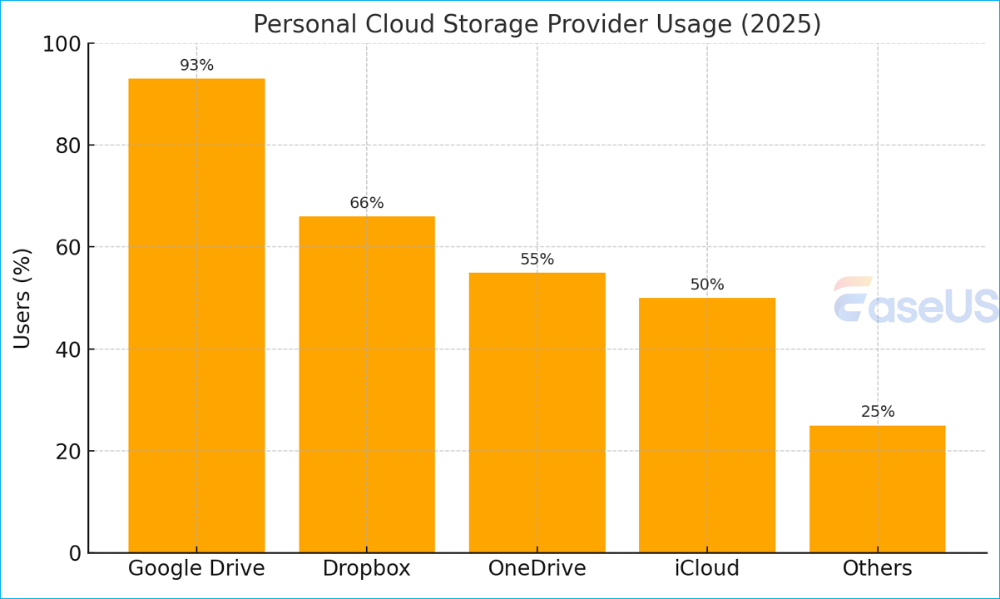
En pratique, les données stockées dans le cloud le sont dans des data centers.
Données 2025 : source techjury.net
Répartition des 50 plus grands datacenters en 2023 (source : VisualCapitalist) :

Répartition des datacenters dans le monde en 2026 (source : https://programs.com) :
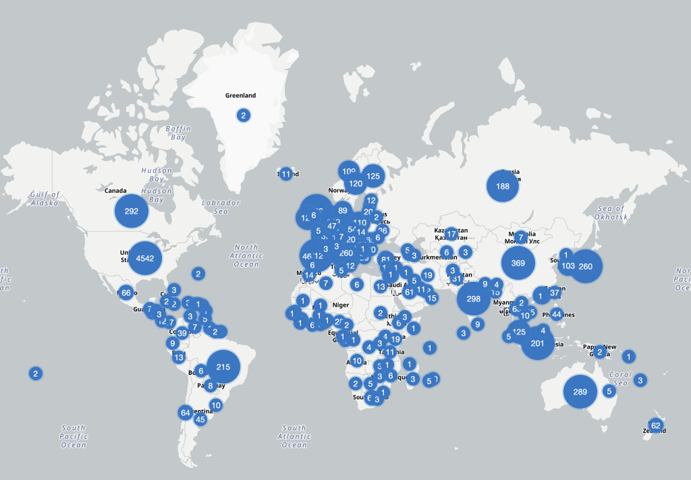
Impact environnemental des data centers en France: source Ademe

Vidéo Les data centers ces usines a donnees :